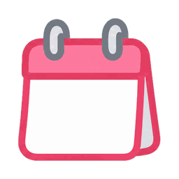

日
きょうの てんき
よみこみちゅう…
がんばりカレンダー

よてい- よみこみちゅう…

よていアナログは、赤い長い針が「分」（まわりの赤い数字）、青い短い針が「時」（青い数字）です。
天気は気象庁の地域の予報、雨の時刻は市区町村のあたりの予報から出しています。詳しくは天気アプリなどでご確認ください。
朝は7時、夕方は17時ごろの気温です。最高気温が28度以上の日は「ぼうし・水とう」、最低気温が5度以下の日は「手ぶくろ・マフラー」も出します。
市区町村のあたりで1時間に1mm以上の雨の予報なら、「あめは ○じごろから」と出して傘をすすめます。分からないときは地域の降水確率で、50%以上で傘、30%以上で折りたたみ傘、雨が長い日や雪の日は長ぐつです。
年齢の目安で、文字（ひらがな・漢字）が変わります。みんなで見る時計・天気・予定は、いちばん小さい子に合わせます。「表示」を外すと、記録を残したままボタンを出しません。
ポイントにすると、貯めてご褒美と交換できます。
iCal の URL（おすすめ）：Google カレンダーなどの「iCal 形式の URL」を貼るだけで使えます。Google カレンダーなら、パソコンで 設定 → 予定を出したいカレンダー →「カレンダーの統合」の「iCal 形式の非公開 URL」をコピーします。
Apps Script：Google Apps Script で自分で用意した中継の URL です。詳しい方向け。わからなければ iCal を選んでください。
どちらの URL も、知っている人は誰でも予定を見られます。ほかの人に教えないでください。
URL はこの端末の中だけに保存します。「使わない」にすると、ボードの予定の欄がなくなります。
スマホに「はなまるボード」のアプリを入れ、「置いてある端末につなぐ」を選んで、この番号を入れてください。
同じ Wi-Fi で読み取ると、ブラウザで設定や「みました」を開けます。開けなくなったときは、もう一度読み取ってください。
置いてある端末の設定の「使い方」に出ている番号でつなぎます。この端末の記録は消えず、つなぐのをやめると元に戻ります。
この時間はずっと表示します。ほかの時間は、しばらく触らないと画面オフになります。
スリープはアプリで使えます。ブラウザでは「暗くするだけ」になります。
電池の異常が分かったときは、ボードの左下に「電池に注意」と出します。端末の背面が膨らんでいたり、熱くなっていたりしたときは、使うのをやめてください。
画面オフの方法・ボードを前に出す・画面の向きは、この端末だけの設定です。
子どもが、できるようになったことを見返すときに一緒に出ます。書き終えると保存します。
使いにくいところや、ほしい機能があれば、お気軽にお知らせください。速やかに検討します。
設定の「使い方」の「画面をつけておく時間」のほかは、しばらく触らないと画面オフになります。オフになるまでの時間は「画面オフまで」で変えられます。
アプリなら「画面をつけておく時間」になると自動で表示します。端末の省電力でアプリが止められているときは、端末の設定でこのアプリを最適化の対象から外してください。ほかのアプリを開いたままになるときは、設定の「使い方」で「ボードを前に出す」をオンにしてください。
設定の「使い方」で「ボードを前に出す」をオンにして、「ほかのアプリの上に表示」を許可してください（アプリのときだけ）。
設定の「使い方」で「システム設定の許可」を「許可する」にしてください（アプリのときだけ）。
子どもの年齢の目安（設定の「がんばりカレンダー」）で変わります。時計・天気・予定の文字は、それぞれのタブの「文字」で固定できます。
アプリでは、設定の「使い方」→「画面の向き」で選べます（この端末だけの設定です）。ブラウザや「自動」のときは、端末の画面の回転の設定に従います。
設定の「使い方」で「低消費電力モード」をオンにするか、画面オフを「スリープする」にしてください。
天気の欄を左右にスワイプすると、6日先まで見られます。あさってからは1日分のまとめで、服装や傘の目安は出しません。
設定の「天気」→「天気の場所」で選んでください。Wi-Fi につながっているかも確かめてください。
目安の気温は、設定の「天気」→「服装の目安」で変えられます。いらなければ「ボードに服装と傘の目安を表示する」をオフにしてください。
雨の時刻は、選んだ市区町村のあたりの予報です。詳しくは天気アプリなどの雨雲レーダーで確かめてください。
夕方からは、次の日の準備のために明日の天気を出します。
設定の「がんばり項目」→「やることの設定」で、名前・ポイント（円）・曜日・子どもごとなどを変えられます。
やることは、いくつでも入れられます。無料版では、子どもは2人までです（3人目からは Pro。準備中です）。
設定は、タブごとに下の「保存」を押すと保存されます。保存していないタブには「●」が付きます。「がんばり項目」の中は、欄ごとに「保存」があります。
設定の「がんばり項目」で、やることの「いつ」を「週に何回」にして、回数を選んでください。回数にとどくと、その週の残りの日は「こんしゅう できた」になります。
子どもの名前を押して開く画面で、月の見出しの横にある「＋ 1かいだけの やること」から入れられます。
同じ「＋ 1かいだけの やること」の画面の右に、これからの分が並びます。押すと直せて、✕ で消せます。
子どもの名前を押して開く画面の下にあります。設定の「がんばりチェック」でも押せます。
設定の「使い方」→「鍵」で「計算問題」か「4桁の番号」を選んでください。
鍵の画面の「番号を忘れた」→「入れなおしを始める」を押してください。24時間たつと、計算問題で開けるようになり、番号は消えます。
いちばん年上の子の年齢の目安に合わせて、まだ習わない問題を、毎回ちがう形で出します。
子どもの画面のカレンダーでその日をタップすると、直したり「みました」を押したりできます（子どもが直せるのは先月1日から）。設定の「がんばりチェック」なら、いつの日でも直せます。「みました」のあとに子どもの画面でチェックを変えると、「みました」は取り消しになります。
「みました」を押した日に、やることが1つでもできていれば、はなまる（）がつきます。
子どもの画面のやることの横にあるボタンです。やり始めるときに子どもが自分で押すと、画面がにぎやかに応援します。ポイントは変わりません。押してからできたやることは「自分から始めた」として、「がんばりチェック」とふりかえり（Pro）に出ます。
言われなくてもできるようになったやることを、子どもごとの「もう できる」に1つにまとめる仕組みです。設定の「がんばり項目」→「できるようになったこと」で、直近2週間でその日の8割できたもの（毎日のやることなら12回。回数の少ないものは4回以上）に「もう できるかも」と出ます。決めるのはおうちの人です。
まとめると、子どもは「もう できる」を開いて「ぜんぶ できた！」を押すだけになります（1つと数え、ポイントはまとめたやることの合計から始まります）。記録はずっと残り、名前の横の階段の数字が増えます。戻すときは、同じ場所か「がんばりチェック」の「▸ 中身」から「やることに戻す」を押します。
できるようになったことを子どもが見返せるページ、おうちの人からのコメント、毎週・毎月のふりかえり、3人以上の子どもの表示が使えます（設定の「Pro」タブ）。Pro は準備中です。いまある無料の機能は、これからも無料のままです。
設定の「がんばり項目」の「ごほうび交換」で、ごほうびの一覧を作り、交換を記録できます。
設定の「がんばりカレンダー」→「ご褒美の単位」で切り替えられます。
予定の欄の ◀ ▶ を押すか、左右にスワイプすると、6日先まで見られます。
パソコンで Google カレンダーを開き、設定 → 予定を出したいカレンダー →「カレンダーの統合」の「iCal 形式の非公開 URL」をコピーして、設定の「カレンダー連携」に貼ってください。
URL と Wi-Fi を確かめてください。Google カレンダーで変えた予定は、反映まで時間がかかることがあります。
設定の「カレンダー連携」で「使わない」を選ぶと、予定の欄がなくなります。
置いてある端末で、設定の「使い方」を「この端末を置いて、別の端末からつなぐ」にして保存します。スマホにも「はなまるボード」のアプリを入れ、「置いてある端末につなぐ」を選んで、置いてある端末に出ている番号を入れてください。
つないでも、スマホの記録は消えません（つなぐのをやめると元に戻ります）。記録を移すときは、スマホの設定の「がんばり項目」→「データの書き出し・読み込み」で書き出し、置いてある端末の同じところの「ファイルから戻す」で読み込みます（置いてある端末の記録は置き換わります）。
同じ Wi-Fi か（ゲスト用の Wi-Fi ではつながりません）、置いてある端末でアプリが開いているかを確かめてください。ルーターの「端末どうしの通信を制限する」設定が有効だと見つかりません。
置いてある端末の設定の「使い方」に出ている QR コードを、同じ Wi-Fi の iPhone で読み取ると、ブラウザで開けます。
いまは同じ Wi-Fi の中だけで使えます。家の外からは使えません。
充電を途中で止める機能（バッテリーの保護など）がある端末や、バッテリーのない（電源で動く）モデルがおすすめです。背面が膨らんでいたり、熱くなっていたりしたときは、使うのをやめてください。
電池が熱いとき（45℃ 以上）や、端末が電池の異常を知らせているときに出します（アプリだけ）。続くときや、背面の膨らみがあるときは、使うのをやめてください。
記録や設定は、この端末の中に保存し、外には送りません。くわしくは、このページのいちばん下の「プライバシーポリシー」をご覧ください。
設定の「がんばり項目」→「データの書き出し・読み込み」で、前もって書き出しておくと、新しい端末で「ファイルから戻す」で元に戻せます。
設定の下にある「かんたん設定」から、よく使う設定だけをやり直せます。いまの値が入っているので、変えないところはそのまま進めてください。
設定の下にある「説明を見る」から見られます。
解決しないときは、上の QR コードのフォームからお知らせください。
同じ Wi-Fi にある「はなまるボード」を探しています。置いてある端末で、設定の「使い方」で「この端末を置いて、別の端末からつなぐ」を選んで保存しておいてください。
この端末の記録は消えません（つないでいる間は見えず、つなぐのをやめると元に戻ります）。置いてある端末へ移すときは、先に設定の「がんばり項目」→「データの書き出し・読み込み」で書き出し、置いてある端末の同じところの「ファイルから戻す」で読み込んでください。
見つからないときは：置いてある端末でアプリが開いているか／同じ Wi-Fi につないでいるか（ゲスト用の Wi-Fi ではつながりません）を確かめて、もう一度さがしてください。
くわしい設定は、あとから設定（日付の右上の歯車）で変えられます。
画面をつけておく時間
ほかの時間は、しばらく触らないと画面オフになります。
住んでいる市区町村を選んでください。
ごほうびの単位
はじめは、すぐにできる簡単なことがおすすめです。毎日「できた！」を味わえると、続きやすくなります。
すでに項目ごとに別の値が入っています。数字を入れると、3つとも一律で上書きします。
やることは、設定の「がんばり項目」で変えてあるので、ここでは変えません。
Google カレンダーの予定を、ボードに出せます。
パソコンの Google カレンダーで、設定 → 予定を出したいカレンダー →「カレンダーの統合」の「iCal 形式の非公開 URL」をコピーして貼ります。URL はこの端末の中だけに保存します。